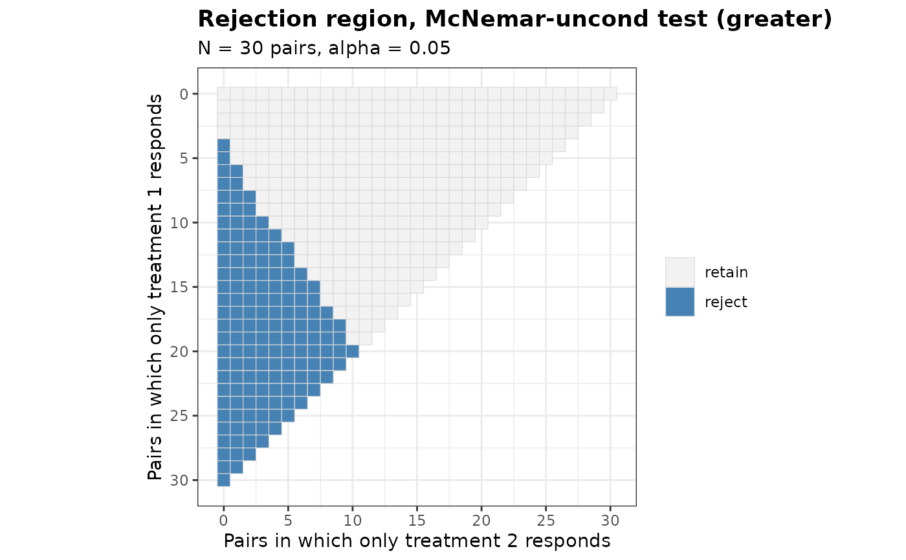

Provides the rejection region of a test comparing two treatments on a binary endpoint in a matched-pairs design, such as a cross-over trial or a comparison of two diagnostic procedures on the same patients. Five tests are supported. Each can be applied with a one-sided or a two-sided alternative, and the score test also tests non-inferiority and equivalence with a margin on the scale of the difference of the response probabilities.
Usage
PairedRR(
N,
alpha,
Test,
alternative = c("greater", "less", "two.sided", "equivalence"),
n.grid = 100,
bb.gamma = 0,
margin = 0,
ref.pvalue = FALSE
)Arguments
- N
Number of pairs
- alpha
Level of significance for the alternative specified by
alternative- Test
Type of statistical test. Options:
'McNemar','McNemar-exact','McNemar-midP','McNemar-uncond'or'Paired-Score'- alternative
Direction of the alternative hypothesis. Options:
'greater'(default) forp10 - p01 > -margin,'less'forp10 - p01 < margin,'two.sided'forp10 != p01, or'equivalence'for-lower < p10 - p01 < upper- n.grid
Number of grid points used to search over the probability of a discordant pair in the test
'McNemar-uncond'. Default is 100- bb.gamma
Confidence level parameter of the Berger-Boos procedure for the test
'McNemar-uncond'. The default of 0 disables the procedure- margin
Margin on the scale of the difference
p10 - p01. The default of 0 gives a test of superiority, and a value other than 0 tests the null hypothesisp10 - p01 <= -marginagainstp10 - p01 > -marginwhenalternativeis'greater', andp10 - p01 >= marginagainstp10 - p01 < marginwhen it is'less'. A negative value tests for superiority by more than its absolute value. A margin other than 0 requiresTest = 'Paired-Score'and a one-sided alternative. Foralternative = 'equivalence'the margin is the pairc(lower, upper), both in (0, 1), or a single value used for both, and the null hypothesisp10 - p01 <= -lowerorp10 - p01 >= upperis tested- ref.pvalue
Logical. If
TRUE, the maximization over the probability of a discordant pair in the test'McNemar-uncond'is refined between the grid points, see Details. Default isFALSE
Value
An object of class bbssr_prr, a logical matrix of dimension
(N + 1) by (N + 1) whose entry [a + 1, b + 1] is TRUE when
the null hypothesis is rejected with a pairs in which only treatment 1 responds
and b pairs in which only treatment 2 responds. Entries with a + b > N
are impossible outcomes and are FALSE. The p-values are stored in the
attribute p.value, with NA at the impossible outcomes, and the design
settings as further attributes
Details
A pair contributes one of four outcomes: both treatments respond, only treatment 1
responds (probability p10), only treatment 2 responds (probability p01),
or neither responds. The difference of the response probabilities of the two
treatments is p10 - p01, and only the numbers a and b of the two
kinds of discordant pairs enter the tests. The function supports the following tests:
The asymptotic McNemar test (McNemar), which refers
Z = (a - b) / sqrt(a + b)to the standard normal distribution without a continuity correction, withZ = 0whena + b = 0The exact conditional McNemar test (McNemar-exact), which refers
ato the binomial distribution witha + btrials and probability 1/2The mid-p version of the exact conditional test (McNemar-midP), formulae (5) and (6) of Fagerland et al. (2013)
The exact unconditional test of Suissa and Shuster (1991) (McNemar-uncond), which orders the outcomes by
Zand maximizes the null tail probability over the probabilitypsi = p10 + p01of a discordant pair, the test Z of Berger and Sidik (2003)The score test of Nam (1997) and Tango (1998) for the null hypothesis
p10 - p01 = -margin(Paired-Score), which refers(a - b + N margin) / sqrt(N (2 q01 - margin (margin + 1)))to the standard normal distribution, whereq01is the maximum likelihood estimate ofp01under the null hypothesis, formulae (24) to (26) of Tango (1998). Withmargin = 0it is the asymptotic McNemar test
The conditional distribution of a given a + b is symmetric under the null
hypothesis, so the usual conventions for the two-sided p-value of a conditional test
agree. The two-sided p-value of the exact conditional test is twice the smaller tail
probability, at most 1, and the two-sided mid-p value follows formulae (5) and (6) of
Fagerland et al. (2013). The two-sided versions of 'McNemar',
'McNemar-uncond' and 'Paired-Score' order the outcomes by the absolute
value of the statistic.
The test 'McNemar-uncond' maximizes the tail probability of each outcome, a
polynomial of degree N in psi, over a grid of n.grid points. The
maximum on the grid can fall below the maximum over the unit interval. With
ref.pvalue = TRUE the grid is extended by points equally spaced on the arcsine
square-root scale and every local maximum on the grid is refined by a golden-section
search between its two neighbouring grid points, as in BinaryRR. With a
positive bb.gamma the maximization is restricted to the Clopper-Pearson
interval of level 1 - bb.gamma for psi computed from a + b, and
bb.gamma is added, the confidence interval p-value of Berger and Sidik (2003).
The alternative 'less' is handled by exchanging a and b. With
alternative = 'equivalence' the null hypothesis is tested by two one-sided score
tests, against 'greater' with the margin lower and against 'less'
with the margin upper, each at the level alpha, and the p-value of an
outcome is the larger of the two one-sided p-values.
The p-values are kept for the rest of the session and reused by later calls with the
same number of pairs and test, see bbssr-package.
References
Berger RL, Sidik K (2003). Exact unconditional tests for a 2 x 2 matched-pairs design. Statistical Methods in Medical Research, 12(2), 91-108.
Fagerland MW, Lydersen S, Laake P (2013). The McNemar test for binary matched-pairs data: mid-p and asymptotic are better than exact conditional. BMC Medical Research Methodology, 13, 91.
Nam J (1997). Establishing equivalence of two treatments and sample size requirements in matched-pairs design. Biometrics, 53(4), 1422-1430.
Suissa S, Shuster JJ (1991). The 2 x 2 matched-pairs trial: exact unconditional design and analysis. Biometrics, 47(2), 361-372.
Tango T (1998). Equivalence test and confidence interval for the difference in proportions for the paired-sample design. Statistics in Medicine, 17(8), 891-908.
Examples
RR <- PairedRR(N = 20, alpha = 0.025, Test = 'McNemar-exact')
print(RR)
#> Rejection region for paired binary data
#>
#> Test : McNemar-exact
#> Alternative : greater
#> Pairs : N = 20
#> Alpha : 0.025
#>
#> Rejected outcomes: 47 of 231
#>
#> b=0 b=1 b=2 b=3 b=4 b=5 b=6 b=7 b=8 b=9 b=10 b=11 b=12 b=13 b=14 b=15 b=16
#> a=0 . . . . . . . . . . . . . . . . .
#> a=1 . . . . . . . . . . . . . . . . .
#> a=2 . . . . . . . . . . . . . . . . .
#> a=3 . . . . . . . . . . . . . . . . .
#> a=4 . . . . . . . . . . . . . . . . .
#> a=5 . . . . . . . . . . . . . . . .
#> a=6 X . . . . . . . . . . . . . .
#> a=7 X . . . . . . . . . . . . .
#> a=8 X X . . . . . . . . . . .
#> a=9 X X . . . . . . . . . .
#> a=10 X X X . . . . . . . .
#> a=11 X X X . . . . . . .
#> a=12 X X X X . . . . .
#> a=13 X X X X X . . .
#> a=14 X X X X X . .
#> a=15 X X X X X X
#> a=16 X X X X X
#> a=17 X X X X
#> a=18 X X X
#> a=19 X X
#> a=20 X
#> b=17 b=18 b=19 b=20
#> a=0 . . . .
#> a=1 . . .
#> a=2 . .
#> a=3 .
#> a=4
#> a=5
#> a=6
#> a=7
#> a=8
#> a=9
#> a=10
#> a=11
#> a=12
#> a=13
#> a=14
#> a=15
#> a=16
#> a=17
#> a=18
#> a=19
#> a=20
#>
#> a: pairs in which only treatment 1 responds
#> b: pairs in which only treatment 2 responds
#> X marks rejection of the null hypothesis
# Non-inferiority with a margin of 0.1 by the score test
RR <- PairedRR(N = 44, alpha = 0.05, Test = 'Paired-Score', margin = 0.1)
sum(RR)
#> [1] 448
# \donttest{
# Exact unconditional test with the Berger-Boos procedure
RR <- PairedRR(N = 30, alpha = 0.05, Test = 'McNemar-uncond', bb.gamma = 0.0005)
plot(RR)

# }